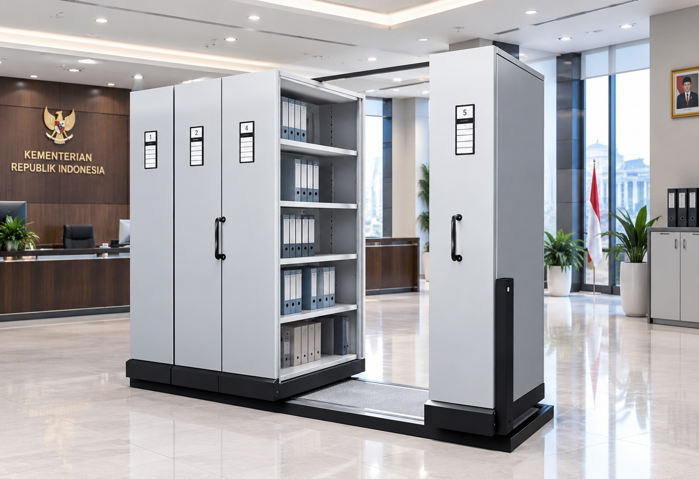
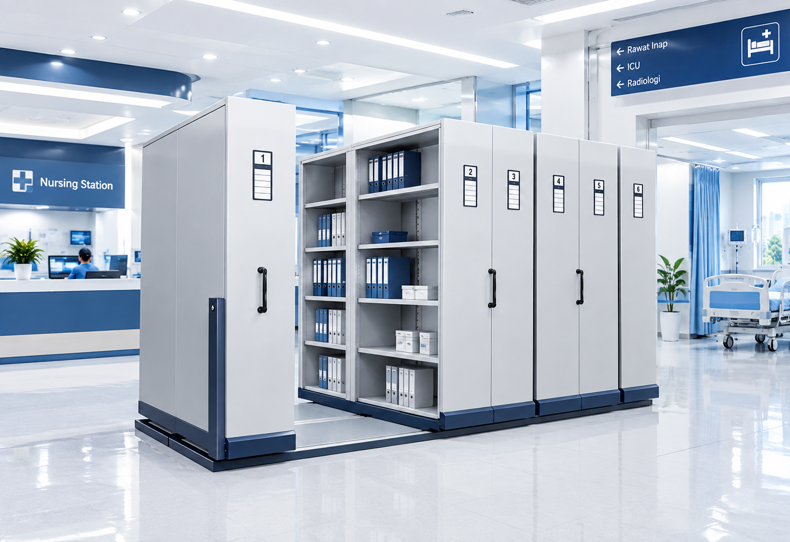
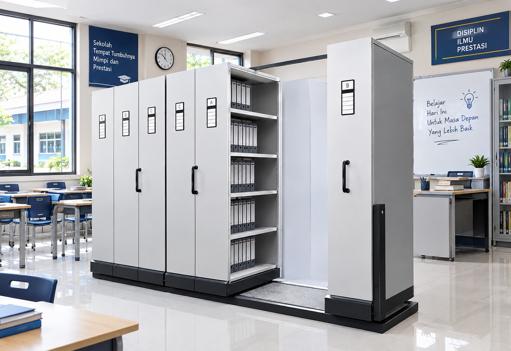
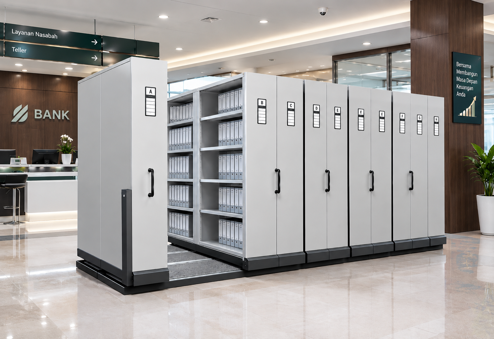
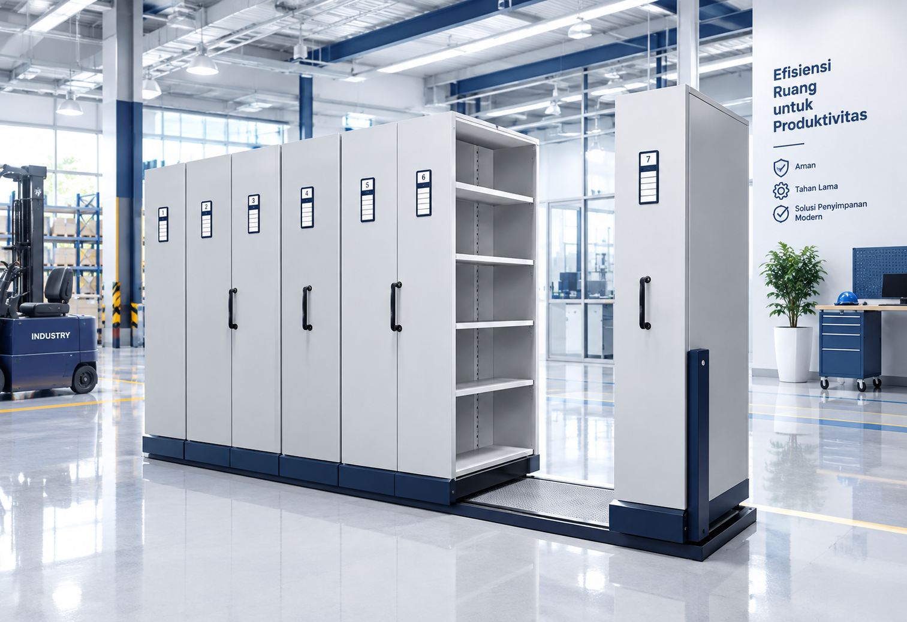

Perkantoran
Membantu menyimpan dokumen administrasi, keuangan, legal, dan operasional secara lebih rapi serta mudah diakses. Mobile file ZECO diterapkan untuk meningkatkan efisiensi ruang penyimpanan kantor di Jakarta.
Kumpulan proyek mobile file ZECO yang telah kami instalasikan untuk berbagai sektor industri di Jakarta dan sekitarnya.
Solusi penyimpanan arsip yang telah kami terapkan untuk berbagai sektor untuk mendukung efisiensi ruang dan produktivitas.
Membantu menyimpan dokumen administrasi, keuangan, legal, dan operasional secara lebih rapi serta mudah diakses. Mobile file ZECO diterapkan untuk meningkatkan efisiensi ruang penyimpanan kantor di Jakarta.

Mendukung penataan arsip dalam jumlah besar dengan pengelompokan dokumen yang lebih terstruktur. Solusi mobile file ZECO memudahkan instansi pemerintahan mengelola dokumen dengan rapi dan efisien.

Membantu menata arsip administrasi dan dokumen institusi dengan pemanfaatan ruang penyimpanan yang lebih efisien. Mobile file ZECO optimal untuk kebutuhan penyimpanan rekam medis dan dokumen pasien di rumah sakit Jakarta.

Cocok untuk membantu mengelola arsip akademik, administrasi, dan dokumen institusi dengan susunan yang lebih rapi. Solusi mobile file ZECO mendukung kebutuhan penyimpanan arsip di lingkungan pendidikan.

Membantu mengelompokkan dokumen finansial berdasarkan kategori dan periode agar lebih mudah ditata dan ditelusuri. Mobile file ZECO untuk kebutuhan penyimpanan dokumen keuangan yang aman dan terorganisir.

Menjadi bagian dari sistem penyimpanan untuk membantu mengelola volume arsip tinggi dengan pemanfaatan ruang yang lebih optimal. Solusi mobile file ZECO untuk kebutuhan penyimpanan skala besar di pabrik dan industri.
Hubungi tim kami sekarang dan dapatkan konsultasi gratis terkait solusi penyimpanan arsip yang tepat untuk Anda.
Konsultasi Sekarang